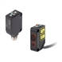

Building Automation
Industrial Automation
Power Automation & Safety


Bangladesh Distributor
- Home
- Products
- Contact Us
Built-in Amplifier
With these Photoelectric Sensors, the amplifier is built into the Sensor Head.
Built-in Amplifier List
There are 22 products of Built-in Amplifier.
IO-Link Photoelectric Sensor E3Z-[]-IL[]
IO-Link Makes Sensor Level Information Visible and Solves the Three Major Issues at Manufacturing Sites! Standard Photoelectric Sensor.
Color Mark Photoelectric Sensor E3S-DC
Color Mark Detection on Any Type of Packaging. Narrow Beam and Large Lens for Stable Detection of Workpieces Tilted at Various Angles.
Transparent Object Detection Photoelectric Sensor E3S-DB
Superb Detection of Many Types of Transparent Objects
 CMOS Laser Sensor with Built-in Amplifier
ZX0
CMOS Laser Sensor with Built-in Amplifier
ZX0
Stable Detection of Level Differences in the Order of 0.1 mm
 Photoelectric Sensors
E3FA, E3RA, E3FB, E3RB
Photoelectric Sensors
E3FA, E3RA, E3FB, E3RB
A new generation in sensing performance
Ultracompact, Ultrathin Photoelectric Sensor with Built-in Amplifier E3T
The Improved E3T Series with Easier, Smoother Mounting and Installation
Compact Photoelectric Sensor with Built-in Amplifier E3Z
The Standard for Photoelectric Sensors with a Secure Track Record of One Million Sold Yearly.
Color Mark Detection Compact Photoelectric Sensor E3ZM-V
Color Mark Detection in a World-standard Size (11 × 21 × 32 mm), with High-speed Response (50 μs) and Accuracy in Spite of Sensing Object Movement
Oil-resistant, Robust, Compact Photoelectric Sensor E3ZM-C
Photoelectric Sensor for the Automotive and Machine Tool Industries
Transparent Object (PET Bottle) Detection Compact Photoelectric Sensor E3ZM-B
Excellent PET Bottle Detection
Compact Photoelectric Sensor with Stainless Steel Housing E3ZM
Stainless Steel Housing Ideal for Food Industry (PAT Pending)
 Compact Laser Photoelectric Sensor with Built-in Amplifier E3Z-LT / LR / LL
Compact and Reliable Laser Photoelectric Sensor
 Distance-settable Photoelectric Sensor
E3Z-LS
Distance-settable Photoelectric Sensor
E3Z-LS
Distance-settable Sensor Unaffected by Workpiece Color and Background
 Grooved-type Photoelectric Sensor with Built-in Amplifier
E3Z-G
Grooved-type Photoelectric Sensor with Built-in Amplifier
E3Z-G
Photoelectric Sensor with Grooved Design and Easy Settings
Oil-resistive, Long-range Photoelectric Sensor with Metal Housing E3S-C
Water- and Oil-resistant Photoelectric Sensor with Metal Housing Used for Long-range Sensing
 Distance-settable Photoelectric Sensor with Metal Case
E3S-CL
Distance-settable Photoelectric Sensor with Metal Case
E3S-CL
Simply Set the Distance to Reliably Detect Workpieces of Various Colors
 Long-distance Photoelectric Sensor with Built-in Amplifier
E3G
Long-distance Photoelectric Sensor with Built-in Amplifier
E3G
Line of Long-distance Photoelectric Sensors for Large Workpieces Includes Retroreflective Models with Sensing Distance of 10 m and Distance Settings Up to 2 m.

 Photoelectric Sensor with Built-in Amplifier
E3S
Photoelectric Sensor with Built-in Amplifier
E3S
General-purpose Photoelectric Sensor for High Quality and Reliable Detection
![E3S-LS3[]](../../../../../Images/l_1167-13-118733-78x78.jpg) PCB Sensors
E3S-LS3[]
PCB Sensors
E3S-LS3[]
Reliable Detection Unaffected by PCB Holes or Notches
 Transparent Object Detection Sensor
E3S-R
Transparent Object Detection Sensor
E3S-R
Ideal for Detecting Glass Wafers and Other Transparent Objects
 Grooved-type Photoelectric Sensor
E3S-GS3E4
Grooved-type Photoelectric Sensor
E3S-GS3E4
A Grooved-type Sensor That Doesn't Require Optical Axes Alignment
Related Contents
- Photoelectric Sensors